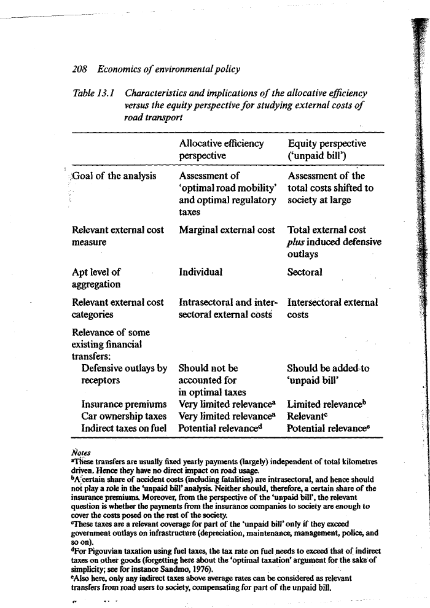
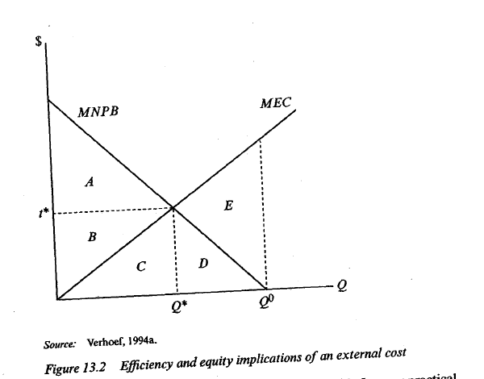
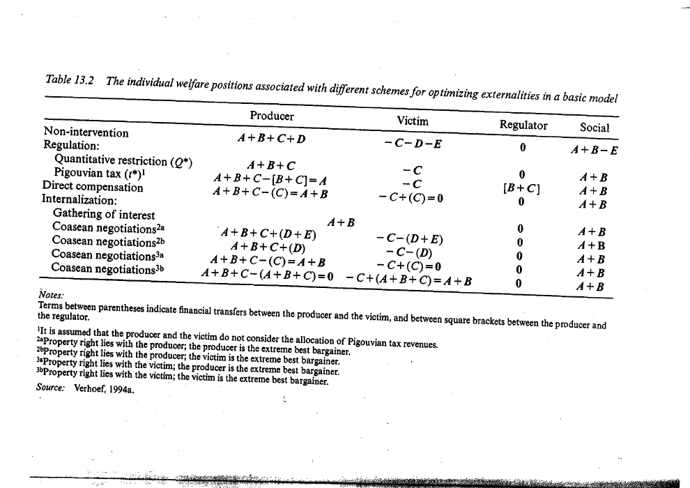

Compare bargaining and policy transfers without confusing efficiency and equity
Explanation, worked examples and practice
Useful first: Derive private and social activity optima and marginal corrective signals
Outcome and conditions
Coasean bargaining and its limitations Efficiency and equity lead to different comparisons
Study conditions, assessment scope and sources
Derive local welfare areas and compare conditional policy/bargaining distributions at an efficient allocation. Required components: local_areas_and_welfare_totals, rights_and_transfer_bounds, coase_and_distribution_limits. Supported work may use the cited notes; independent checks use no notes, internet, solution or hints. A basic calculator and blank paper are allowed; reasoning, formula selection and assumptions must be supplied by the learner. Numerical examples below are agent-created hypothetical instantiations unless explicitly labelled as a finished-note example. They do not assert current market or policy facts.
Prerequisites and checks
Check the prerequisites
O007-P1 / item_version 1: O006 is needed because marginal optimum and integrated areas define transfers. Prompt: At \(Q^{*}\) do private andsocial objectives have to give the same distribution? Key: No. Social optimum fixes the conditional marginal balance; rights/taxes/compensation can distribute its aggregate surplus differently. Pass requires the keyed mechanism and qualification; partial means an omitted step; fail means a conflicting mechanism. Adequate committed evidence under a compatible criterion permits skipping this diagnostic. Otherwise repair through Outcome and conditions before continuing.
Motivation and explanation
Figure 13.2 uses its own area letters. At \(Q^{*}\), integrate \(\mathrm{MNPB}\) to get \(A+B+C\) and \(\mathrm{MEC}\) to get \(C\); social sum \(A+B\). Tax rectangle \(Q^*t^*=B+C\) is a transfer, not extra damage. Extending from \(Q^{*}\) to private \(Q_0\) adds \(D\) private gain and \(D+E\) damage, lowering welfare by \(E\). A restriction leaves producer \(A+B+C\) and victim \(-C\); tax additionally moves \(B+C\) to regulator; compensation moves \(C\) to the victim. Ideal rights-based negotiation trades the benefit of reducing/allowing output. Producer right: reduction sacrifices \(D\) and avoids \(D+E\) harm, so transfer bounds from \(D\) to \(D+E\); maximum presumes truthful no-above-\(Q_0\) threat. Victim right: permitting \(Q^{*}\) costs victim \(C\) and is worth \(A+B+C\) to the producer, giving bounds from \(C\) to \(A+B+C\). Rights choose transfer direction and bargaining picks its size. Enforceability, feasible transfers and low transaction costs underpin the ideal efficiency result; many victims and free-riding break easy coordination. Intra/inter-sector and marginal/total cost questions differ. Income-dependent monetary valuations can change policy comparisons without settling ethical equity. Uncertainty/heterogeneity and actual institutions limit the simple equivalence.
Read the full explanation
Reading context
Deliver these complete reused passages before the worked example; earlier concise prompts are checkpoints, not substitutes. Necessary prerequisites use the complete prepared lessons specified above.
Source passage
Origin: reused complete checked passage Coasean bargaining and its limitations; fingerprint 529d959710600922cf0919bc4bb77ccd698aa1e4c411e91dcc19de2023f47e39. Heading depth alone is adapted.
Coasean bargaining and its limitations
The lecture illustrates bargaining with radio stations whose broadcasts interfere. With enforceable rights, transferable money, feasible ways of avoiding the harm and no transaction costs, the station with the higher-valued use can compensate the other to obtain that use. In the usual Coasean argument, bargaining reaches an efficient outcome regardless of initial rights, under the stated ideal conditions and with the lecture's uniqueness qualification. Initial rights still govern who pays whom and how surplus is distributed. Lecture, physical PDF pp. 23–24 Verhoef Externalities, physical PDF pp. 3,7–8
Transaction costs include finding and coordinating participants, negotiating, monitoring and enforcing agreements. The lecture's factory facing a thousand landowners illustrates why the two-person ideal becomes difficult: individual victims can wait for others to finance the improvement. Missing environmental-quality rights and undepletable public-bad effects add difficulties. With transaction costs, the attainable allocation can depend on initial rights. The lecture's “Second Coase theorem” recommends institutions that reduce reallocation costs, while admitting that governments cannot know the highest-valued use without cost. This title is the lecture's wording, not a reason to omit its qualifications. Lecture, physical PDF pp. 26–27 Verhoef Externalities, physical PDF p. 3
Source passage
Origin: reused complete checked passage Efficiency and equity lead to different comparisons; fingerprint 529d959710600922cf0919bc4bb77ccd698aa1e4c411e91dcc19de2023f47e39. Heading depth alone is adapted.
Efficiency and equity lead to different comparisons
An efficient tax sets the marginal incentive; it need not equal the total unpaid bill. For an increasing MEC curve, the rectangle \(Q^*t^*\) can exceed the area of total external damage. In the chapter's linear diagram it is twice the optimal external damage \(A\). With constant MEC, marginal and average damage coincide. Thus the polluter-pays principle is ambiguous until one specifies payment of total damage, marginal incentive, or both. Willingness to pay or accept also depends on income: the same physical exposure can receive a larger money valuation for a richer receptor. Locating pollution where measured money damage is low can therefore conflict with equity concerns. Verhoef Externalities, physical PDF p. 6

Table 13.1, physical p. 7, printed p. 208. The efficiency question needs marginal external cost, individual aggregation and both intra- and intersectoral harm. The unpaid-bill question needs total external cost plus defensive outlays, sectoral aggregation and costs shifted outside the sector. Footnotes retain the qualifications on insurance and taxes. Verhoef Externalities, physical PDF p. 7
A fixed annual insurance premium or ownership tax has little direct effect on the next kilometre driven. It can nevertheless matter to unpaid-bill accounting, with the table's restrictions: insurance payments must be compared with costs imposed outside the sector; ownership taxes cover unpaid costs only above infrastructure expenditure; fuel taxes used as Pigouvian corrections need a differential above ordinary indirect taxation, apart from second-best taxation questions. Existing transfers should therefore be evaluated against the actual research question. Verhoef Externalities, physical PDF p. 7

Figure 13.2, physical p. 7, printed p. 209. Its letters belong to this figure, separately from Figure 13.1 and the lecture diagram. Here \(MNPB=MPB-MPC\) is marginal net private benefit in money per unit of activity \(Q\), and \(MEC\) is marginal external cost in the same units. The private choice \(Q^0\) has \(MNPB=0\); the social choice \(Q^*\) has \(MNPB=MEC=t^*\). The labelled areas integrate these marginal quantities and therefore measure money, rather than money per unit. Verhoef Externalities, physical PDF p. 7
To read the letters, start left of \(Q^*\). Area \(A\) lies between \(MNPB\) and the horizontal tax level \(t^*\); \(B\) lies between \(t^*\) and \(MEC\); \(C\) is below \(MEC\). Thus net private benefit through \(Q^*\) is \(A+B+C\), damage is \(C\), the tax rectangle is \(B+C\), and social welfare is \(A+B\). Right of \(Q^*\), \(D\) is below \(MNPB\) between \(Q^*\) and \(Q^0\), while \(E\) is between \(MEC\) and \(MNPB\). Continuing to \(Q^0\) adds private benefit \(D\) and damage \(D+E\), lowering social welfare by \(E\). Unrestricted private benefit is consequently \(A+B+C+D\), damage is \(C+D+E\), and their difference is \(A+B-E\). This construction makes every transfer in Table 13.2 interpretable without borrowing another diagram's letters. Verhoef Externalities, physical PDF pp. 7–8

Table 13.2, physical p. 8, printed p. 210. It compares distribution under a single producer, a single victim unable to defend itself, and the Figure 13.2 area convention. Parentheses denote transfers between producer and victim; square brackets denote transfers to the regulator. In the simple model all optimizing schemes yield social welfare \(A+B\), while non-intervention yields \(A+B-E\). Verhoef Externalities, physical PDF pp. 7–8
A quantity restriction leaves producer welfare \(A+B+C\) and victim welfare \(-C\). A Pigouvian tax transfers \(B+C\) to the regulator, leaving producer welfare \(A\), victim welfare \(-C\) and the same social total. Direct compensation transfers \(C\) to the victim, leaving it at zero and the producer at \(A+B\). A merger gathers the interests into the common total. If the producer owns the right, the victim pays to reduce production: the two extreme-bargainer cases transfer \(D\) or \(D+E\) and leave the producer above its unrestricted welfare in one case. If the victim owns the right, the producer pays between \(C\) and \(A+B+C\) in the table's extreme cases. The upper payment \(D+E\) assumes truthful bargaining: chapter note 12 excludes a producer threatening output above the private choice \(Q^0\) to extract a larger payment. Verhoef Externalities, physical p. 9, printed p. 213, note 12 These are alternative distributional bounds, not simultaneous payments. The chapter consequently explains why producer and victim rank schemes differently and why political support for standards can differ from support for taxes. Revenue allocation is assumed ignored by both actors in the table's tax row. Verhoef Externalities, physical PDF pp. 7–8
The tax-versus-quantity equivalence here relies on a deliberately simple model. Chapter note 8 warns that uncertainty and heterogeneity can break it; tradable permits also introduce a market absent from a plain quantity restriction. The instrument note explains cost effectiveness and enforcement, while the taxation note adds pre-existing fiscal distortions. Verhoef Externalities, physical PDF pp. 9 notes8,11 Lecture, physical PDF pp. 31–54
Worked example
O007-W1 / item_version 1, worked_example. Prompt: Hypothetical Figure 13.2 area convention (distinct from earlier diagrams): \(A=B=C=D=10\) money and \(E=20\). A producer and one victim can bargain with enforceable rights. Define each area geometrically through \(Q^{*}\)/\(Q_0\), \(\mathrm{MNPB}\) and \(\mathrm{MEC}\); derive unrestricted/private/damage/social totals. Compute producer/victim/regulator welfare under restriction, Pigouvian tax and direct compensation at \(Q^{*}\). Derive min/max transfers and resulting welfare when producer owns the right and when victim owns it. Explain Coase conditions, producer-truthfulness upper-bound qualification, why equal efficiency need not mean equal equity, and marginal-tax versus total-unpaid-bill/valuation limits.
Steps and interpretation: Left of \(Q^{*}\): \(A\) between \(\mathrm{MNPB}\) and horizontal \(t^{*}\), \(B\) between \(t^{*}\) and \(\mathrm{MEC}\), \(C\) below \(\mathrm{MEC}\). From \(Q^{*}\) to \(Q_0\): \(D\) below \(\mathrm{MNPB}\), \(E\) between \(\mathrm{MEC}\) and \(\mathrm{MNPB}\). Private welfare at \(Q^{*}\) is \(A+B+C=30\); damage \(C=10\); social \(A+B=20\); tax rectangle \(B+C=20\). Unrestricted private welfare is \(A+B+C+D = 40\), damage \(C+D+E=40\), social \(A+B-E=0\). Restriction: producer \(30\), victim \(-10\); tax: producer \(A=10\), victim \(-10\), regulator \(B+C=20\); compensation transfer \(C=10\): producer \(20\), victim \(0\), same total \(20\). Producer owns the right: victim pays \(D=10\) minimum (producer’s lost private gain) through \(D+E=30\) maximum (victim’s avoided damage); at \(Q^{*}\) producer \(A+B+C+\text{transfer}\) ranges from \(40\) to \(60\), victim \(-C-\text{transfer}\) ranges from \(-20\) to \(-40\); total \(A+B=20\) always. Upper bound requires truthful producer not threatening above \(Q_0\). Victim owns the right: producer pays from \(C=10\) to \(A+B+C=30\), so producer welfare ranges from \(20\) to \(0\) and victim welfare ranges from \(0\) to \(20\). These are alternative bargaining extremes, not simultaneous payments. Coase needs enforceable rights, feasible money transfers and sufficiently low transaction/coordination costs; many victims/public-bad free riding can obstruct negotiation. Rights change transfers, not the ideal efficient \(Q^{*}\), but transaction costs can change attainable allocation. Efficiency does not determine fair distribution; marginal incentive and total damage differ (tax rectangle \(20\) versus total damage \(10\) here), while income-sensitive willingness-to-pay can conflict with equity. A fixed insurance/ownership payment may compensate but not price another kilometre; sector unpaid-bill accounting needs its own boundary and defence expenditures.
Supported completion
Write your reasoning, then reveal the complete key to check each step.
A local draft for your own study.
Reveal explanation
Key: Left of \(Q^{*}\): \(A\) between \(\mathrm{MNPB}\) and horizontal \(t^{*}\), \(B\) between \(t^{*}\) and \(\mathrm{MEC}\), \(C\) below \(\mathrm{MEC}\). From \(Q^{*}\) to \(Q_0\): \(D\) below \(\mathrm{MNPB}\), \(E\) between \(\mathrm{MEC}\) and \(\mathrm{MNPB}\). Private welfare at \(Q^{*}\) is \(A+B+C=45\); damage \(C=15\); social \(A+B=30\); tax rectangle \(B+C=30\). Unrestricted private welfare is \(A+B+C+D = 60\), damage \(C+D+E=60\), social \(A+B-E=0\). Restriction: producer \(45\), victim \(-15\); tax: producer \(A=15\), victim \(-15\), regulator \(B+C=30\); compensation transfer \(C=15\): producer \(30\), victim \(0\), same total \(30\). Producer owns the right: victim pays \(D=15\) minimum (producer’s lost private gain) through \(D+E=45\) maximum (victim’s avoided damage); at \(Q^{*}\) producer \(A+B+C+\text{transfer}\) ranges from \(60\) to \(90\), victim \(-C-\text{transfer}\) ranges from \(-30\) to \(-60\); total \(A+B=30\) always. Upper bound requires truthful producer not threatening above \(Q_0\). Victim owns the right: producer pays from \(C=15\) to \(A+B+C=45\), so producer welfare ranges from \(30\) to \(0\) and victim welfare ranges from \(0\) to \(30\). These are alternative bargaining extremes, not simultaneous payments. Coase needs enforceable rights, feasible money transfers and sufficiently low transaction/coordination costs; many victims/public-bad free riding can obstruct negotiation. Rights change transfers, not the ideal efficient \(Q^{*}\), but transaction costs can change attainable allocation. Efficiency does not determine fair distribution; marginal incentive and total damage differ (tax rectangle \(30\) versus total damage \(15\) here), while income-sensitive willingness-to-pay can conflict with equity. A fixed insurance/ownership payment may compensate but not price another kilometre; sector unpaid-bill accounting needs its own boundary and defence expenditures.
Allowed support: show the named definition or equation in Motivation and explanation, then ask for the missing substitution and interpretation. At most two hints: first identify the relevant distinction; second point to the first keyed step. Reveal the worked solution if those fail. Supported success does not establish acquisition. Fade assistance only once the learner explains the keyed steps; then hide the solution and use an unused full check.
Rubric and independence
Self-assessment criteria and tutor checks
Pass requires every listed component, all requested outputs and essential keyed reasoning without a critical conceptual error. Algebraically equivalent formulas, explicitly defined opposite cash-flow signs and equivalent plain-language reasoning are accepted. Partial means a missing component or a correct method with an unresolved isolated arithmetic slip; fail means the central mechanism or condition is wrong. Unscorable means the response or help/exposure conditions cannot be established. Unknown conditions never certify independence. Arithmetic slips require independent correction before a pass. No numerical grade is invented.
Critical errors: Area letters borrowed from another figure; tax revenue counted as damage/social gain; rights do not affect distribution; no transaction costs presumed in many-victim case; \(D+E\) bound without truthfulness.
Acquisition requires two distinct unassisted passes from I1/I2/D1/D2 using the exact six routes in metadata. Each full prompt and key covers every component; any pair therefore covers the whole outcome twice. A fresh D item used for acquisition cannot later certify delayed retention. Worked/support/prerequisite items and the narrow C1 correction cannot substitute for a full check. The finite bank must not be reused after exposure; request a plan_issue when fewer than two fresh full items remain.
| Component | I1 | I2 | D1 | D2 |
|---|---|---|---|---|
| local_areas_and_welfare_totals | required | required | required | required |
| rights_and_transfer_bounds | required | required | required | required |
| coase_and_distribution_limits | required | required | required | required |
Misconceptions and correction
If social sum differs across transfer-only schemes, cancel the same payment on payer/recipient sides and keep real damage separate. Reconstruct areas from this exact figure. Observe the learner's reasoning before diagnosing: a sign or omitted word alone is tentative. Score before help. O007-C1 / item_version 1, narrow_correction. Fresh prompt: Fresh narrow check: tax moves12 from producer to government and damage stays5. Does society gain 12 just from collecting it? Key and rubric: No; transfer−12/+12 cancels. Real welfare effects require changed activity/damage/resource costs, while distribution changes. Pass only if the keyed repaired component is supplied; partial for an omission or arithmetic slip; fail for the same conflicting mechanism. C1 is not a full independent check. After two ineffective hints show the relevant worked step; after another failed correction pause and return to the named prerequisite or explanation.
Immediate and delayed checks
All items are item_version 1 and full_capability_check. I1/I2 are immediate forms; D1/D2 are distinct delayed forms. Delayed success requires an unused unassisted item before recap, at least 24 actual elapsed hours after acquisition and the most recent relevant teaching/solution exposure, with intervening exposure recorded. A date change alone does not qualify. Early D attempts may be acquisition checks only. Each item is a bounded parallel or near-context variant, not proof of broad transfer. Each key states the full required response; do not improvise extra variants.
A local draft for your own study.
Reveal explanation
Key and essential rubric: Left of \(Q^{*}\): \(A\) between \(\mathrm{MNPB}\) and horizontal \(t^{*}\), \(B\) between \(t^{*}\) and \(\mathrm{MEC}\), \(C\) below \(\mathrm{MEC}\). From \(Q^{*}\) to \(Q_0\): \(D\) below \(\mathrm{MNPB}\), \(E\) between \(\mathrm{MEC}\) and \(\mathrm{MNPB}\). Private welfare at \(Q^{*}\) is \(A+B+C=60\); damage \(C=20\); social \(A+B=40\); tax rectangle \(B+C=40\). Unrestricted private welfare is \(A+B+C+D = 80\), damage \(C+D+E=80\), social \(A+B-E=0\). Restriction: producer \(60\), victim \(-20\); tax: producer \(A=20\), victim \(-20\), regulator \(B+C=40\); compensation transfer \(C=20\): producer \(40\), victim \(0\), same total \(40\). Producer owns the right: victim pays \(D=20\) minimum (producer’s lost private gain) through \(D+E=60\) maximum (victim’s avoided damage); at \(Q^{*}\) producer \(A+B+C+\text{transfer}\) ranges from \(80\) to \(120\), victim \(-C-\text{transfer}\) ranges from \(-40\) to \(-80\); total \(A+B=40\) always. Upper bound requires truthful producer not threatening above \(Q_0\). Victim owns the right: producer pays from \(C=20\) to \(A+B+C=60\), so producer welfare ranges from \(40\) to \(0\) and victim welfare ranges from \(0\) to \(40\). These are alternative bargaining extremes, not simultaneous payments. Coase needs enforceable rights, feasible money transfers and sufficiently low transaction/coordination costs; many victims/public-bad free riding can obstruct negotiation. Rights change transfers, not the ideal efficient \(Q^{*}\), but transaction costs can change attainable allocation. Efficiency does not determine fair distribution; marginal incentive and total damage differ (tax rectangle \(40\) versus total damage \(20\) here), while income-sensitive willingness-to-pay can conflict with equity. A fixed insurance/ownership payment may compensate but not price another kilometre; sector unpaid-bill accounting needs its own boundary and defence expenditures. All components are required.
A local draft for your own study.
Reveal explanation
Key and essential rubric: Left of \(Q^{*}\): \(A\) between \(\mathrm{MNPB}\) and horizontal \(t^{*}\), \(B\) between \(t^{*}\) and \(\mathrm{MEC}\), \(C\) below \(\mathrm{MEC}\). From \(Q^{*}\) to \(Q_0\): \(D\) below \(\mathrm{MNPB}\), \(E\) between \(\mathrm{MEC}\) and \(\mathrm{MNPB}\). Private welfare at \(Q^{*}\) is \(A+B+C=75\); damage \(C=25\); social \(A+B=50\); tax rectangle \(B+C=50\). Unrestricted private welfare is \(A+B+C+D = 100\), damage \(C+D+E=100\), social \(A+B-E=0\). Restriction: producer \(75\), victim \(-25\); tax: producer \(A=25\), victim \(-25\), regulator \(B+C=50\); compensation transfer \(C=25\): producer \(50\), victim \(0\), same total \(50\). Producer owns the right: victim pays \(D=25\) minimum (producer’s lost private gain) through \(D+E=75\) maximum (victim’s avoided damage); at \(Q^{*}\) producer \(A+B+C+\text{transfer}\) ranges from \(100\) to \(150\), victim \(-C-\text{transfer}\) ranges from \(-50\) to \(-100\); total \(A+B=50\) always. Upper bound requires truthful producer not threatening above \(Q_0\). Victim owns the right: producer pays from \(C=25\) to \(A+B+C=75\), so producer welfare ranges from \(50\) to \(0\) and victim welfare ranges from \(0\) to \(50\). These are alternative bargaining extremes, not simultaneous payments. Coase needs enforceable rights, feasible money transfers and sufficiently low transaction/coordination costs; many victims/public-bad free riding can obstruct negotiation. Rights change transfers, not the ideal efficient \(Q^{*}\), but transaction costs can change attainable allocation. Efficiency does not determine fair distribution; marginal incentive and total damage differ (tax rectangle \(50\) versus total damage \(25\) here), while income-sensitive willingness-to-pay can conflict with equity. A fixed insurance/ownership payment may compensate but not price another kilometre; sector unpaid-bill accounting needs its own boundary and defence expenditures. All components are required.
A local draft for your own study.
Reveal explanation
Key and essential rubric: Left of \(Q^{*}\): \(A\) between \(\mathrm{MNPB}\) and horizontal \(t^{*}\), \(B\) between \(t^{*}\) and \(\mathrm{MEC}\), \(C\) below \(\mathrm{MEC}\). From \(Q^{*}\) to \(Q_0\): \(D\) below \(\mathrm{MNPB}\), \(E\) between \(\mathrm{MEC}\) and \(\mathrm{MNPB}\). Private welfare at \(Q^{*}\) is \(A+B+C=90\); damage \(C=30\); social \(A+B=60\); tax rectangle \(B+C=60\). Unrestricted private welfare is \(A+B+C+D = 120\), damage \(C+D+E=120\), social \(A+B-E=0\). Restriction: producer \(90\), victim \(-30\); tax: producer \(A=30\), victim \(-30\), regulator \(B+C=60\); compensation transfer \(C=30\): producer \(60\), victim \(0\), same total \(60\). Producer owns the right: victim pays \(D=30\) minimum (producer’s lost private gain) through \(D+E=90\) maximum (victim’s avoided damage); at \(Q^{*}\) producer \(A+B+C+\text{transfer}\) ranges from \(120\) to \(180\), victim \(-C-\text{transfer}\) ranges from \(-60\) to \(-120\); total \(A+B=60\) always. Upper bound requires truthful producer not threatening above \(Q_0\). Victim owns the right: producer pays from \(C=30\) to \(A+B+C=90\), so producer welfare ranges from \(60\) to \(0\) and victim welfare ranges from \(0\) to \(60\). These are alternative bargaining extremes, not simultaneous payments. Coase needs enforceable rights, feasible money transfers and sufficiently low transaction/coordination costs; many victims/public-bad free riding can obstruct negotiation. Rights change transfers, not the ideal efficient \(Q^{*}\), but transaction costs can change attainable allocation. Efficiency does not determine fair distribution; marginal incentive and total damage differ (tax rectangle \(60\) versus total damage \(30\) here), while income-sensitive willingness-to-pay can conflict with equity. A fixed insurance/ownership payment may compensate but not price another kilometre; sector unpaid-bill accounting needs its own boundary and defence expenditures. All components are required.
A local draft for your own study.
Reveal explanation
Key and essential rubric: Left of \(Q^{*}\): \(A\) between \(\mathrm{MNPB}\) and horizontal \(t^{*}\), \(B\) between \(t^{*}\) and \(\mathrm{MEC}\), \(C\) below \(\mathrm{MEC}\). From \(Q^{*}\) to \(Q_0\): \(D\) below \(\mathrm{MNPB}\), \(E\) between \(\mathrm{MEC}\) and \(\mathrm{MNPB}\). Private welfare at \(Q^{*}\) is \(A+B+C=105\); damage \(C=35\); social \(A+B=70\); tax rectangle \(B+C=70\). Unrestricted private welfare is \(A+B+C+D = 140\), damage \(C+D+E=140\), social \(A+B-E=0\). Restriction: producer \(105\), victim \(-35\); tax: producer \(A=35\), victim \(-35\), regulator \(B+C=70\); compensation transfer \(C=35\): producer \(70\), victim \(0\), same total \(70\). Producer owns the right: victim pays \(D=35\) minimum (producer’s lost private gain) through \(D+E=105\) maximum (victim’s avoided damage); at \(Q^{*}\) producer \(A+B+C+\text{transfer}\) ranges from \(140\) to \(210\), victim \(-C-\text{transfer}\) ranges from \(-70\) to \(-140\); total \(A+B=70\) always. Upper bound requires truthful producer not threatening above \(Q_0\). Victim owns the right: producer pays from \(C=35\) to \(A+B+C=105\), so producer welfare ranges from \(70\) to \(0\) and victim welfare ranges from \(0\) to \(70\). These are alternative bargaining extremes, not simultaneous payments. Coase needs enforceable rights, feasible money transfers and sufficiently low transaction/coordination costs; many victims/public-bad free riding can obstruct negotiation. Rights change transfers, not the ideal efficient \(Q^{*}\), but transaction costs can change attainable allocation. Efficiency does not determine fair distribution; marginal incentive and total damage differ (tax rectangle \(70\) versus total damage \(35\) here), while income-sensitive willingness-to-pay can conflict with equity. A fixed insurance/ownership payment may compensate but not price another kilometre; sector unpaid-bill accounting needs its own boundary and defence expenditures. All components are required.
Content provenance and generation boundaries
Sources and scope
Complete checked-note passages above are reused with only heading-depth and explicit mathematical typography adaptation; exact origin/fingerprint and asset dependencies are in source_manifest.md. All earlier plan-created exercises/full keys and named evidence routes remain intact. Hypothetical arithmetic instantiates the included definitions and does not introduce empirical results or new academic claims. Only named prepared full-capability forms and their existing permitted pairs can certify acquisition/delayed evidence. Extra checked explanation/practice cannot replace a named full form or reassessment gate. Equivalent verified methods may meet the unchanged pre-answer criterion; ambiguous criteria or an exhausted fresh bank return to plan. The current objective revision is 2; item/criterion versions remain as explicitly stated above.